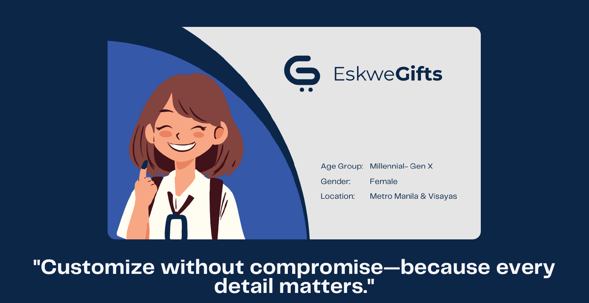

Marketing Analytics Business Pitch
Customer Segmentation & First-Time Buyer Analysis
Project Overview
Client: EskweGifts (fictional start-up) Tools: SQL · Looker Studio · Google BigQuery Focus: Diagnosed a 97% drop in new user acquisition and segmented high-value first-time buyers to reverse stagnation.
Highlights:- Identified a 97.5% drop in new user acquisition as the root cause—not churn.
- Analyzed behavioral patterns across 80,000+ customers and 5,000+ products
- Built personas using quadrant and variability analysis and proposed 4 data-driven growth initiatives
| üîç Discover The Strategy That Turned Data into Direction |
üìñ Read Full Project Summary
Customer Segmentation & First-Time Buyer Analysis
As part of the Data Analytics Bootcamp, I completed a 6-day sprint focused on uncovering the root causes of EskweGifts’ customer acquisition decline and providing segmentation-based marketing strategies to improve business performance. This sprint was a direct continuation of our previous work but pushed deeper into exploratory and inferential analysis, combining SQL, Python, Looker Studio, and hypothesis testing to surface actionable marketing insights.
The scope remained fully within a marketing analytics lens, with a sharpened focus on first-time buyer behavior and its relationship to EskweGifts’ -33.7% YoY revenue decline. Building on the customer and product datasets scoped in Sprint 3, we developed a structured analytical strategy anchored on two central questions:
- Who exactly are EskweGifts’ customers? (Customer-centric analysis: buyer personas and behavior segments)
- What are their best-performing products? (Product-centric analysis: SKU preferences within customer groups)
I led both the strategic framing and technical implementation of this sprint. This included drafting the Exploratory Data Analysis (EDA) Action Plan, aligning it to key marketing goals, and identifying which metrics would help refine buyer personas and product preferences. I utilized Generative AI to rapidly close knowledge gaps around segmentation logic, variable testing, and domain-specific marketing strategies — enabling faster iteration and sharper outputs.
A critical turning point in the sprint was my application of the Pareto Principle to determine the single largest contributor to revenue loss. This led us to focus on first-time buyers, whose volume had peaked at launch but declined significantly thereafter — even as repeat buyers grew by 95.91%. From there, I designed and led the execution of a Quadrant Analysis to segment first-time buyers into four distinct behavioral groups based on two tested variables. This involved several layers of work:
- Conducted hypothesis tests (Chi-Square Test, ANOVA, T-test) to determine which variables had statistically significant influence on purchase behavior.
- Assessed each candidate variable using a framework of Relevance, Variability, and Actionability, ensuring practical use for marketing strategy.
- Used Looker Studio, SQL, and Python (Google Colab/Jupyter) to scope, transform, and visualize the segmented results.
I also created the Customer Segmentation Action Plan, guided the team in its execution, and drafted the presentation flow and business pitch for stakeholders. The final recommendations addressed marketing opportunities based on behavioral differences between buyer quadrants, and proposed personalization strategies, product bundles, referrals, and retargeting flows to revive first-time buyer acquisition.
Additionally, I tracked team deliverables, aligned everyone to the core business problem, and documented feedback for future optimization.
Datasets Used:
orders.csv— Purchase details (Order ID, Customer ID, Revenue, Date, Product)users.csv— Customer demographics (Age Group, Gender, Region)voucher.csv— Voucher use and discount levelssku.csv— Product categories and customization attributes
Sample Analytical Problems Solved:
- Identified that first-time buyer acquisition was the main driver of revenue loss, despite strong repeat buyer metrics.
- Discovered that certain customer attributes (e.g., region and customization preferences) significantly impacted conversion likelihood for first-time buyers.
- Conducted statistical validation of segmentation variables to ensure marketing strategies were based on meaningful behavioral differences.
- Built quadrant-based buyer personas, each tied to tailored messaging, pricing, and product promotion opportunities.
- Designed marketing recommendations grounded in segmentation data, enabling EskweGifts to personalize acquisition strategies by behavior type.
Key Skills and Tools Strengthened:
- Quadrant Analysis for Customer Segmentation: Identified key behavioral clusters among first-time buyers using statistical validation and marketing relevance frameworks.
- Hypothesis Testing & Statistical Validation: Applied t-tests and ANOVA to compare buyer behavior across demographic and transactional variables, ensuring segmentation accuracy.
- SQL & Data Transformation: Scoped and manipulated relational data tables (orders, users, vouchers, SKU) to generate analytical-ready datasets.
- Looker Studio Dashboarding: Visualized quadrant clusters, demographic trends, and segment performance through dynamic filtering and breakdowns.
- Python (Jupyter, Colab): Supplemented analysis with exploratory statistics and testing where SQL or Looker Studio fell short.
- Exploratory Data Analysis (EDA): Designed and led the action plan to deeply explore customer and product metrics linked to revenue performance.
- Strategic Framing & Business Alignment: Anchored all analysis to marketing goals, using structured logic (What → Why → So What) to drive stakeholder understanding.
- Project & Team Management: Delegated tasks based on team strengths, managed timelines, and ensured consistent alignment across deliverables.
- Presentation & Communication: Wrote and delivered a data-backed business pitch; handled stakeholder Q&A and explained complex insights in clear, actionable terms.
This sprint deepened my ability to bridge the gap between data science and marketing decision-making. I demonstrated how to move from ambiguous symptoms to a statistically validated segmentation strategy, and how to turn that strategy into actionable recommendations aligned with the business context. It reinforced my fluency in exploratory analytics, statistical testing, marketing frameworks, and strategic data storytelling — all while managing team coordination in a fast-paced project environment.
üéÅ Bonus: Full Case Study PDF üèÜ See the Executive-Ready Pitch üõ†Ô∏è Challenge Me‚ÄîLet‚Äôs Build Solutions